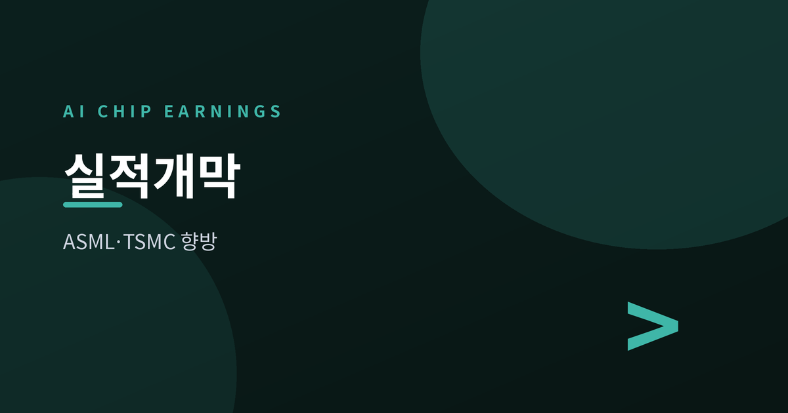
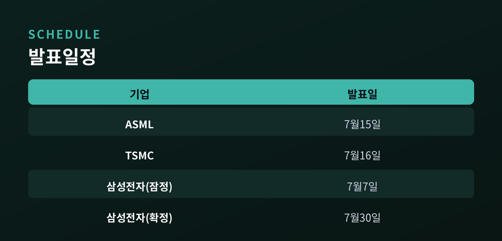
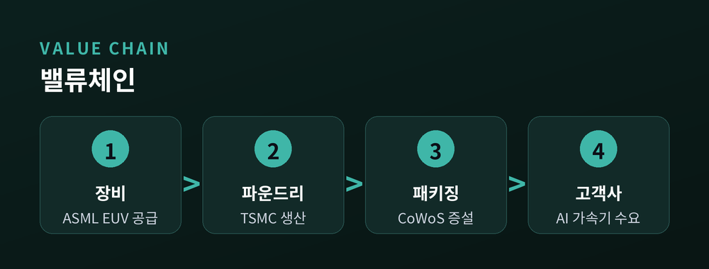
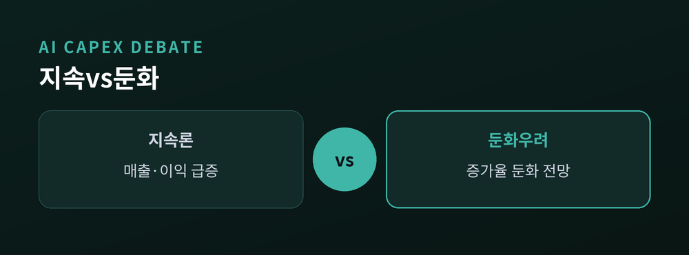
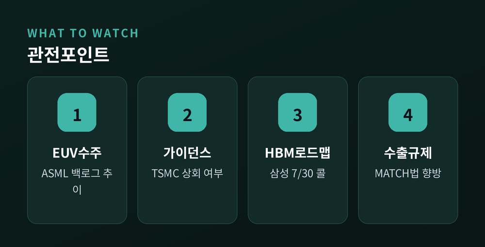

ASML·TSMC가 가를 투자 사이클의 향방

이번 주 반도체 업계의 시선이 네덜란드와 대만으로 쏠립니다. 7월 15일 ASML, 16일 TSMC가 이틀 간격으로 2분기 실적을 발표합니다. 두 회사는 각각 첨단 노광장비와 파운드리 공정에서 사실상 대체 불가능한 위치에 있어, 이번 실적표 두 장이 AI 투자 사이클 전체의 체온계 역할을 하게 됩니다. 앞서 7월 7일 잠정 실적을 내놓은 삼성전자까지 더하면, 이번 실적 시즌은 AI 반도체 랠리가 계속될지를 가늠하는 첫 관문이 될 전망입니다.
ASML은 7월 15일 개장 전 2분기 실적을 공개합니다. 자체 가이던스는 매출 84억~90억유로, 매출총이익률 51~52%입니다. 앞선 1분기에는 매출 88억유로로 전년 대비 13% 늘었고, 마진은 가이던스 상단인 53.0%를 기록했습니다. ASML은 이후 연간 가이던스를 360억~400억유로로 상향했는데, 이는 2025년 327억유로 대비 최대 22% 증가한 수치입니다.
TSMC는 16일 대만 시간 오후 2시 실적을 발표합니다. 자체 가이던스는 매출 390억~402억달러, 마진 65.5~67.5%입니다. 시장 컨센서스는 주당순이익(ADR 기준) 3.81달러로 전년 2.47달러를 크게 웃돌 것으로, 매출은 약 400억달러로 전년 300억달러대에서 뛸 것으로 봅니다. 1분기에는 매출 359억달러(전년 대비 40.6% 증가), 마진 66.2%를 기록한 바 있습니다.
삼성전자는 이미 7월 7일 2분기 잠정 실적을 발표했습니다. 매출 171조원, 영업이익 89.4조원으로 전년 동기 대비 약 19배 늘었습니다. 반도체를 담당하는 디바이스솔루션 부문이 전체 이익의 93% 이상을 차지했습니다. 다만 발표 직후 주가는 6%대 하락했는데, 시장에서는 "기대가 이미 주가에 반영됐다"는 해석이 나왔습니다.

ASML은 최첨단 극자외선(EUV) 노광장비를 사실상 독점 공급합니다. 파운드리와 메모리 업체들이 설비투자를 어디까지 늘릴지는 결국 ASML 장비 주문으로 먼저 드러납니다. TSMC는 엔비디아를 비롯한 AI 가속기 설계사들의 실제 생산을 맡고 있어, AI 반도체 수요를 가장 먼저 체감하는 위치에 있습니다.
TSMC의 1분기 실적을 보면 AI·고성능컴퓨팅(HPC) 관련 매출이 전체의 약 61%를 차지했습니다. 7나노 이하 첨단 공정이 웨이퍼 매출의 74%를 차지했고, 이 중 3나노 비중만 25%였습니다. 웨이저자 TSMC 회장은 최근 2024~2029년 AI 가속기 매출 연평균성장률(CAGR) 전망을 기존 45%에서 54~56%로 상향했습니다. 2025년 기준 AI 가속기 매출은 전체 웨이퍼 매출의 17~19% 수준으로 추정됩니다.
TSMC는 2024~2029년 AI 가속기 매출 연평균성장률(CAGR) 전망을 45%에서 54~56%로 상향 조정했습니다.

지속론의 근거는 뚜렷합니다. 구글·마이크로소프트·메타·아마존 등 대형 4사의 2026년 설비투자 합산 규모는 약 7250억달러로 추정되며, JP모간은 2030년까지 글로벌 AI 관련 누적 설비투자를 5.5조달러로 추산합니다(직전 추정치 5.1조달러에서 상향). 더 눈에 띄는 변화는 수익성 지표입니다. 인프라 감가상각 1달러당 하이퍼스케일러·네오클라우드가 벌어들이는 매출이 1.19~1.32달러 수준으로, 1년 전 1달러 미만이었던 데서 개선됐습니다. 삼성전자 역시 메모리 공급 부족이 2027년까지 더 심화될 수 있다고 경고해, 가격 강세가 이어질 가능성을 시사했습니다.
반대로 둔화 우려도 병존합니다. 일부 분석에 따르면 설비투자 증가율 자체는 2026년 51%에서 2027년 13%, 2028년 약 5%로 낮아질 것으로 예상됩니다. 다만 이는 급격히 늘어난 기저를 소화하는 자연스러운 흐름이라는 해석도 함께 나옵니다. 전력 인프라가 데이터센터 수요 증가 속도를 따라가지 못하는 점도 병목 요인으로 꼽힙니다. 유틸리티 설비투자 증가율은 2025년 20%에서 2026년 15%로 오히려 둔화될 전망입니다. 여기에 ASML의 중국 매출 비중이 2025년 33%에서 2026년 약 20%로 급감할 것으로 예상되는 점도 변수입니다. 지난 4월 발의된 이른바 'MATCH법'은 심자외선(DUV) 이머전 장비까지 수출 규제 대상에 포함시키는 내용을 담고 있어, ASML 매출의 약 5분의 1을 차지하는 DUV 사업에 부담이 될 수 있습니다.

첫째, ASML의 신규 수주(북킹) 규모입니다. 2025년 4분기 수주는 132억유로로 시장 예상을 크게 웃돌았고, 연말 백로그는 388억유로(이 중 EUV 수주만 74억유로)에 달했습니다. 이번 분기 수주가 이 흐름을 이어가는지가 관전 포인트입니다. 둘째, TSMC가 자체 가이던스(390억~402억달러)를 상회할지, 연간 30%대 성장 전망을 재확인하거나 추가로 상향할지입니다. 첨단 패키징(CoWoS) 증설 속도도 함께 살펴볼 대목입니다. 셋째, 삼성전자는 7월 30일 확정 실적 콘퍼런스콜에서 HBM 로드맵과 엔비디아 등 고객사向 공급 확대 계획을 구체적으로 밝힐 것으로 보입니다. 넷째, MATCH법을 비롯한 수출 규제 입법 진행 상황과 미중 반도체 갈등의 향방입니다.

세 기업의 숫자는 이미 방향을 어느 정도 보여주고 있습니다. 다만 실적이 좋다는 사실과, 그 실적이 시장 기대를 뛰어넘는지는 다른 문제입니다. 삼성전자가 사상 최대 이익을 내고도 주가가 밀린 사례는 이번 실적 시즌 전체에 적용될 수 있는 경고음입니다. AI 투자 사이클은 아직 꺾이지 않았지만, "얼마나 더 좋아야 만족할 것인가"라는 질문이 시장의 새로운 화두로 떠오르고 있습니다.
참고 소스